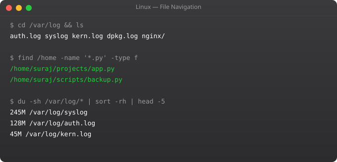

Fluent navigation is the foundation of Linux productivity. Until you can move around the filesystem quickly, find files reliably, and manipulate them efficiently, every other Linux skill is slower than it should be. This part covers the commands you will use every single day in Linux systems work.
pwd # Print working directory
ls # List files
ls -la # Long format, all files (including hidden)
ls -lh # Human-readable file sizes
ls -lt # Sort by modification time (newest first)
ls -lS # Sort by size (largest first)
ls /etc/*.conf # List specific pattern
cd /home/ubuntu # Absolute path
cd .. # Parent directory
cd ../.. # Two levels up
cd ~ # Home directory
cd - # Previous directory
cd / # Root directorytouch file.txt # Create empty file / update timestamp
touch {a,b,c}.txt # Create multiple files: a.txt b.txt c.txt
mkdir logs # Create directory
mkdir -p app/logs/2025 # Create nested directories (parents too)
mkdir -m 755 scripts # Create with specific permissions
# Create file with content
echo "Hello World" > file.txt # Overwrite
echo "Second line" >> file.txt # Append
cat > newfile.txt << EOF
Line 1
Line 2
EOFcp file.txt backup.txt # Copy file
cp -r dir/ backup/ # Copy directory recursively
cp -p file.txt dest/ # Preserve permissions and timestamps
cp -i file.txt dest/ # Interactive (prompt before overwrite)
mv file.txt /tmp/ # Move file
mv old-name.txt new-name.txt # Rename file
mv dir/ /new/location/ # Move directory
rm file.txt # Delete file (PERMANENT, no trash!)
rm -r directory/ # Delete directory recursively
rm -rf /tmp/old-build/ # Force delete, no prompts (DANGEROUS!)
rm -i files/*.log # Interactive -- prompts for each filecat file.txt # Print entire file
cat -n file.txt # With line numbers
less file.txt # Scroll through (q to quit, / to search)
more file.txt # Page through (older, less features)
head file.txt # First 10 lines
head -20 file.txt # First 20 lines
tail file.txt # Last 10 lines
tail -50 file.txt # Last 50 lines
tail -f /var/log/nginx/access.log # Follow live updates
wc -l file.txt # Count lines
wc -w file.txt # Count words# find: powerful file search
find /etc -name "*.conf" # Find .conf files in /etc
find /home -user ubuntu # Files owned by ubuntu user
find /var/log -mtime -7 # Modified in last 7 days
find / -size +100M # Larger than 100MB
find . -type f -name "*.py" # Python files in current dir
find . -type f -empty # Empty files
find /tmp -mtime +7 -exec rm {} \; # Delete files older than 7 days
# locate: fast database search
sudo updatedb # Update locate database
locate nginx.conf # Find nginx.conf
# which and whereis
which python3 # Binary location
whereis nginx # Binary + man pages + source# Symbolic link (soft link) -- like a shortcut
ln -s /usr/local/nginx-1.25/bin/nginx /usr/local/bin/nginx
ln -s /data/logs /var/log/app # Link directory
ls -la /usr/local/bin/nginx # Shows -> target
readlink /usr/local/bin/nginx # Show link target
# Hard link -- another name for the same file
ln file.txt file-hardlink.txt
# Deleting original file does not affect hard linkThere is no trash in the Linux command line. rm is permanent. Use extundelete or testdisk immediately after deletion before new data overwrites it. Prevention: use rm -i for interactive confirmation, or alias rm to mv to a trash folder. Always have backups.
-r means recursive -- apply the operation to all files and subdirectories. cp -r copies directories. rm -r deletes directories. grep -r searches recursively. Without -r, most commands only operate on individual files.
Use less for interactive scrolling. Use head/tail for specific parts. For very large log files, tail -f watches live output. For searching within files, use grep pattern file.txt which shows only matching lines.
A hard link is another name for the same file data. Deleting one does not affect the other. A soft link (symlink) is a pointer to another file path. If the target is deleted, the symlink breaks. Use soft links for most purposes, especially for pointing to directories.
ls -lhS shows files in human-readable sizes sorted largest first. du -sh * shows sizes of all items in current directory. du -sh * | sort -rh sorts by size, largest first. Find largest files system-wide: find / -type f -size +100M 2>/dev/null
In Part 3, we cover Linux file permissions -- understanding and managing who can read, write, and execute files.
← Back to Blog